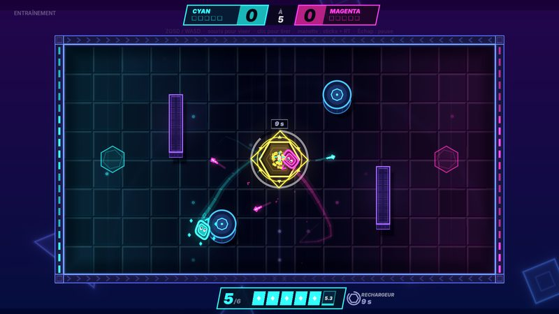
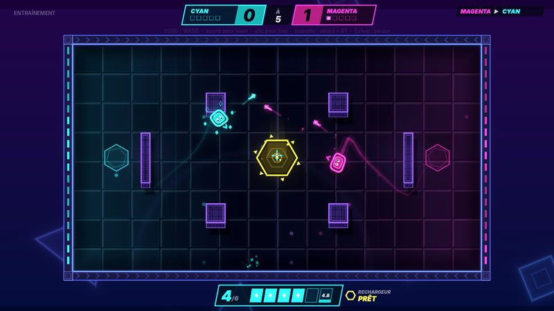
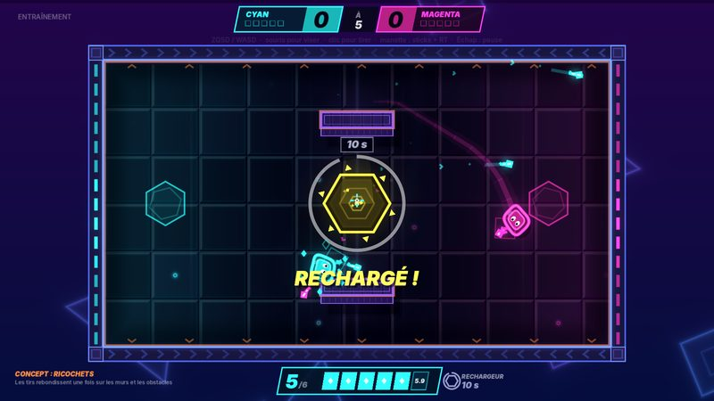
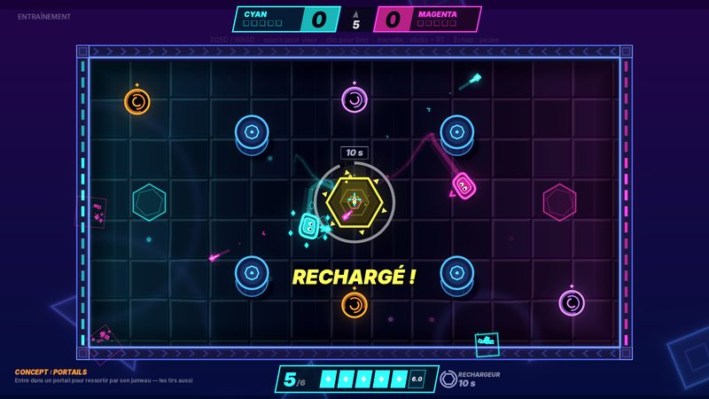
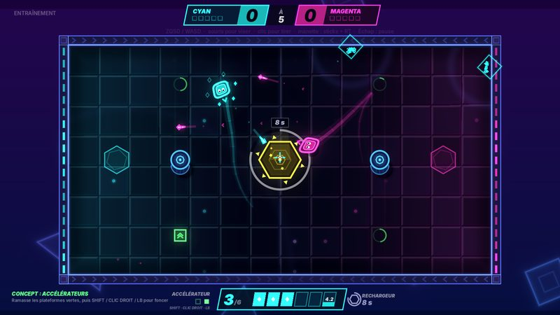
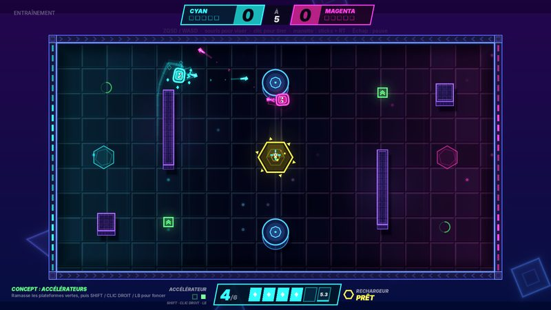

Installer
Télécharge le fichier BlobDuel-0.8.0-windows.zip.
Fais un clic droit dessus, puis Extraire tout.
Double-clique sur BlobDuel.exe dans le dossier extrait. Rien d'autre à installer.
Windows va sûrement afficher « Windows a protégé votre ordinateur ». C'est normal pour un jeu en test qui n'est pas encore signé numériquement. Clique sur Informations complémentaires, puis sur Exécuter quand même. Le pare-feu peut aussi demander l'accès au réseau la première fois que tu joues en ligne : autorise-le pour les réseaux privés.
Jouer avec un ami
L'un de vous clique sur Créer un salon. Un code s'affiche, par exemple 60001-04R9V-FN8BB-Q4M2T.
Il envoie ce code à l'autre, qui clique sur Rejoindre un salon et le colle.
L'hôte choisit la carte, puis vous cliquez tous les deux sur Prêt.
Sur le même Wi-Fi
Ça marche directement avec le code affiché.
Chacun chez soi
Installez tous les deux Tailscale (gratuit) et connectez-vous au même réseau Tailscale. Dans le salon, l'hôte envoie le code listé sous Autres adresses, celui dont l'adresse commence par 100.
Autre solution : ouvrir le port UDP 24680 sur la box de l'hôte.
Le code contient une clé secrète propre au salon : ne le partage qu'avec la personne avec qui tu joues.
Les règles en vingt secondes
Six balles
Elles reviennent une par une, six secondes chacune. Ta réserve s'affiche en bas de l'écran ; celle de l'adversaire reste cachée.
Le rechargeur
L'hexagone jaune au centre recharge toutes tes balles d'un coup. Ensuite, il faut attendre dix secondes pour le réutiliser.
Des tirs lents
On les voit venir. Tout se joue sur l'anticipation, l'esquive et les obstacles derrière lesquels se cacher.
Premier à cinq
Une touche donne un point. Le menu propose un tutoriel en sept étapes pour démarrer.
Commandes
| Action | Clavier et souris | Manette |
|---|---|---|
| Se déplacer | ZQSD ou les flèches | Stick gauche |
| Viser | Souris | Stick droit |
| Tirer | Clic gauche, maintenu pour tirer en continu | Gâchette droite |
| Accélérer | Maj ou clic droit, sur les cartes à accélérateurs | LB |
| Pause | Échap | Start |
Six cartes












Questions
Mon antivirus bloque le jeu
Certains antivirus se méfient des programmes récents et non signés. Le fichier officiel est celui de cette page ; tu peux vérifier qu'il n'a pas été modifié grâce à son empreinte SHA-256, en bas de page. Si besoin, ajoute une exception pour le dossier du jeu.
On me demande un code d'accès
Cette version de test est réservée aux personnes invitées. Le code t'a été donné avec le lien de cette page. Après plusieurs codes faux, il faut attendre 15 minutes. Chaque personne peut télécharger le jeu quelques fois par jour.
Le jeu est-il sûr ?
En ligne, tout ce qui passe entre les deux joueurs est chiffré, et la clé secrète du salon n'est jamais envoyée sur le réseau : chacun prouve qu'il la connaît sans la révéler. L'hôte vérifie chaque action de l'invité, ce qui empêche la plupart des triches. Le jeu ne demande aucun droit administrateur.
Mon ami n'arrive pas à rejoindre
Vérifie qu'il a copié le code en entier (20 caractères). Sur deux réseaux différents, il faut Tailscale ou un port ouvert sur la box de l'hôte. Autorise aussi BlobDuel.exe dans le pare-feu Windows. Un nouveau code est créé à chaque salon.
Ça marche sur Mac ou Linux ?
Pas encore : cette version de test est pour Windows uniquement.
Le jeu rame
Dans Paramètres, baisse l'intensité du glow et les secousses d'écran. Une carte graphique récente n'est pas nécessaire.
Quelles données sont collectées ?
Aucune. Pas de compte, pas de statistiques, aucun serveur contacté. Le jeu garde seulement tes réglages sur ton ordinateur. En ligne, ton adresse IP est visible par ton adversaire, comme pour toute connexion directe. Détails dans la politique de confidentialité.
Donne ton avis
C'est une version de test : ce qui t'a plu, ce qui t'a agacé, un bug, une idée de carte… tout m'intéresse.
Écrire sur Discord